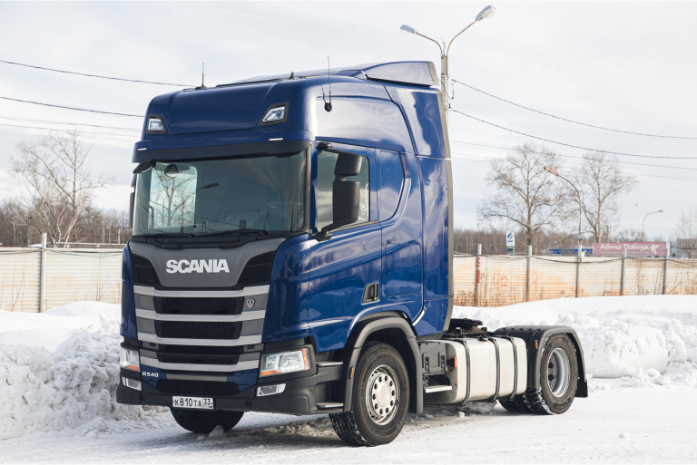
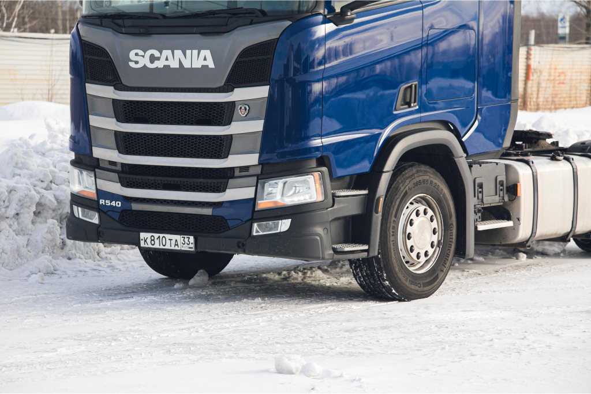
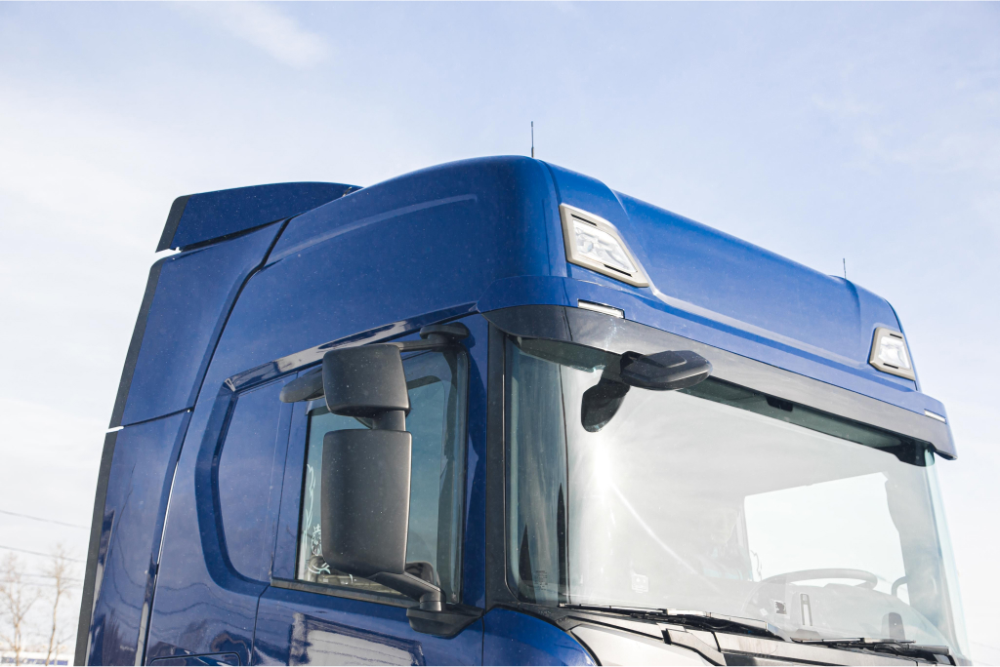
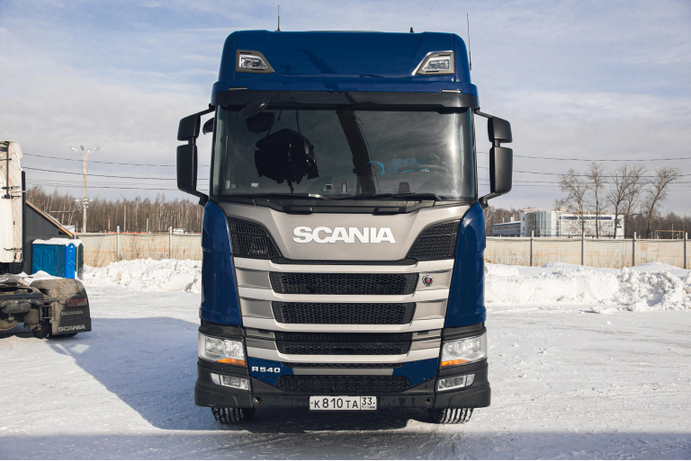
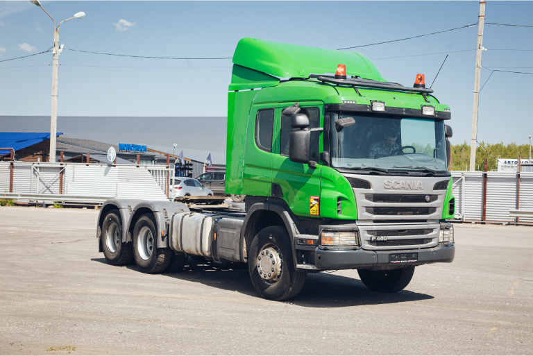
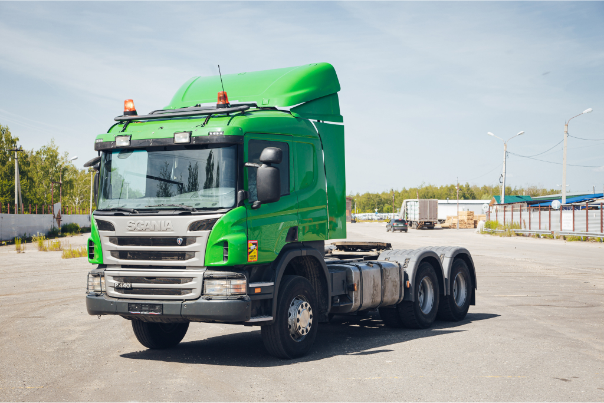
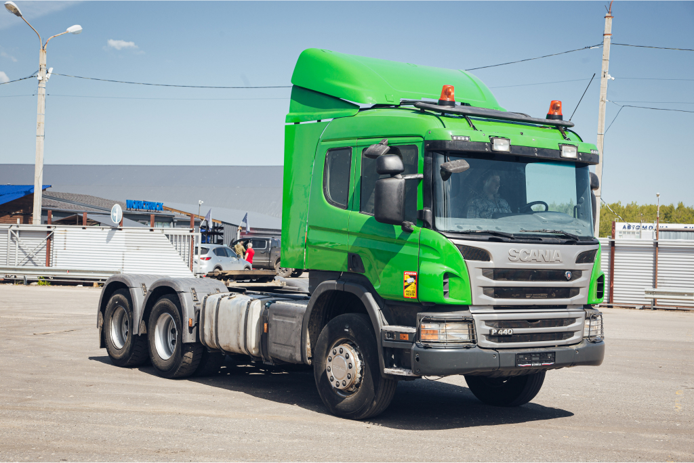
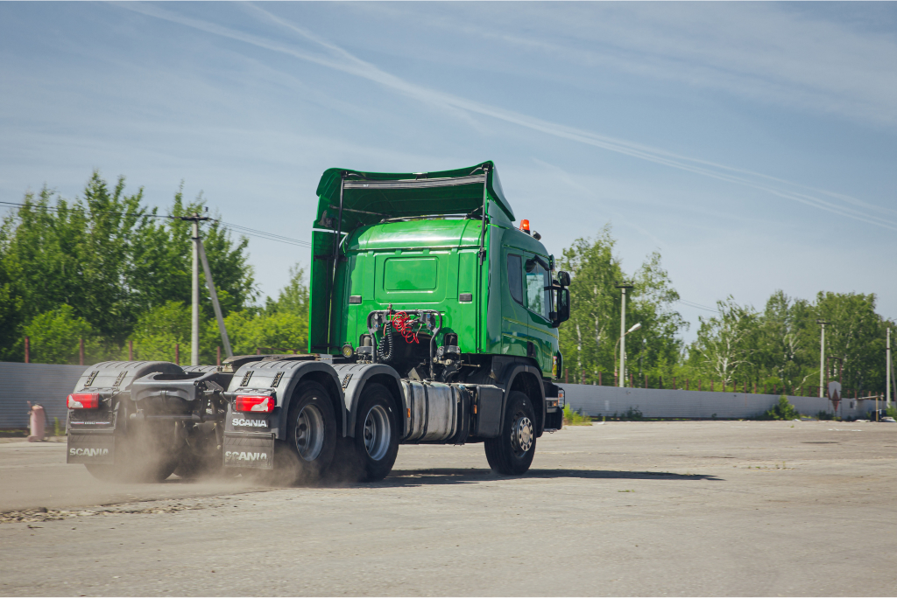

До - после
Scania G400 «Иностранка» – кузовной ремонт и покраска
Трёхосная Scania G400 редкого бледно-голубого цвета приехала к нам из-за рубежа с повреждениями кабины. Помята правая дверь, стойки, задняя стенка. Тягач был в рейсе и в дороге
завалился на бок. Для наших мастеров такое восстановление – несложная задача.
Правую боковую стенку и дверь заменили – их уже не исправить. А вот заднюю стенку и правую переднюю стойку вытянули до изначального состояния. Обновлённую кабину с навесным
пластиком полностью покрасили в тот же интересный цвет.
Scania R440 «Северянка» – замена кабины
Scania R440 6 серии работала на севере и приехала к нам с серьёзными повреждениями кабины. На трассе тягач догнал другой автомобиль. Удар пришёлся в правую сторону, в
результате – вмятины, трещины и нарушение геометрии кабины.
Владелец решил не восстанавливать, а поменять кабину. Специально под него мы привезли из Европы тягач R450, кабина с которого и пошла на замену. Но был нюанс: у тягача клиента
топливная система PDE, а у донора – XPI, как у многих «европейцев».
У наших мастеров достаточно опыта для такой замены – всё прошло без проблем. Часть проводки сохранили со старой кабины и учли другие особенности. В итоге на новой кабине даже
разблокировали дополнительные удобные функции, которых не было в старой, сделанной для российского рынка.




После
Scania P440 «Светофор» – восстановление из «тотала»
Тягач Scania P440 к нам привезли частями: отдельно кабину и отдельно шасси. ДТП было серьёзным: удар в переднюю часть настолько сильный, что двигатель сошёл со своего
посадочного места и сломал кожух маховика, а КПП отсоединилась. Кабина и вовсе не подлежит восстановлению.
Работы много, но нет ничего невозможного. Раму выправили,
полностью заменили электропроводку по шасси и поменяли кожух маховика двигателя. Достали ГБЦ, проверили и поставили обратно – тут без повреждений. Заменили кабину. Теперь
вместо спортивного красного – жизнеутверждающий зелёный. Подсоединили и проверили – всё работает. По факту, пересобрали тягач заново.




После